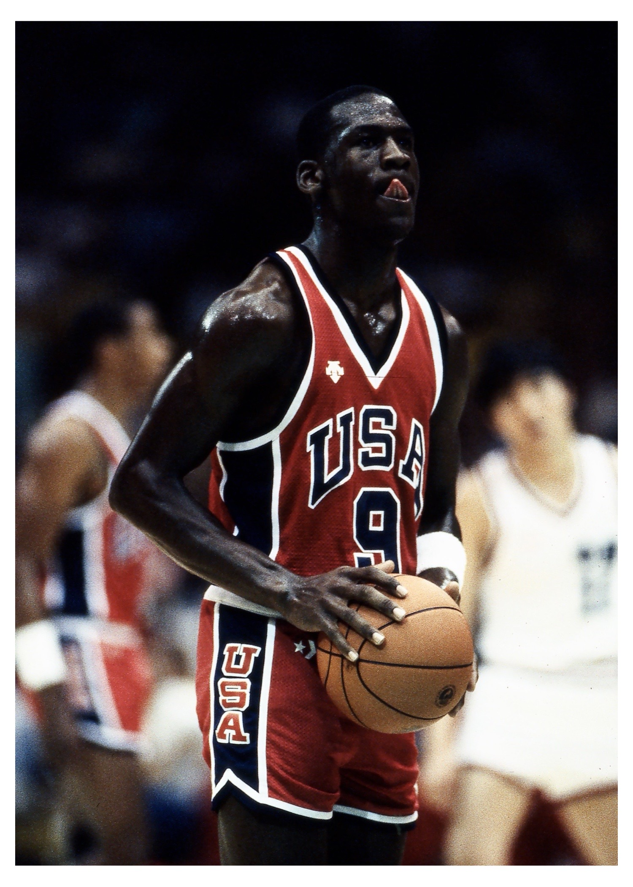
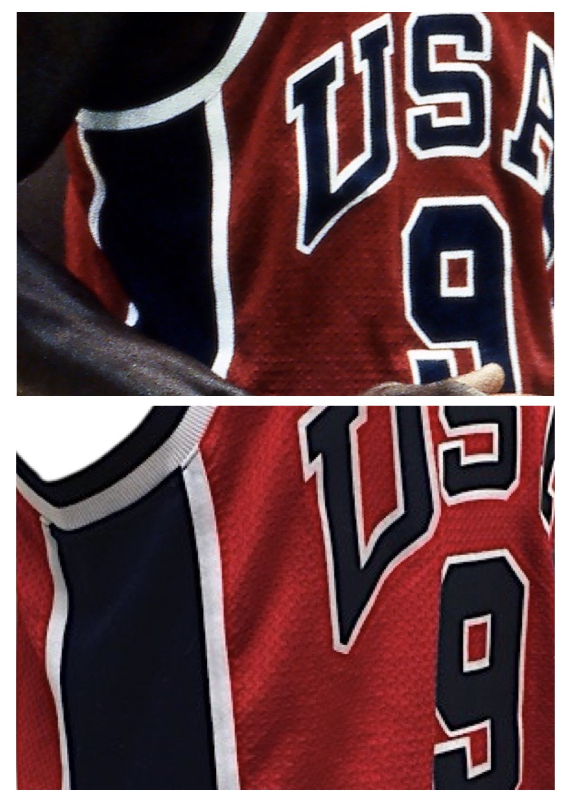

1984 Team USA — Alternate Jersey
Verified photomatch analysis of a Team USA alternate jersey worn by Michael Jordan during the July 29, 1984 Olympic match against Team China.
Image Evidence


Findings Summary
Source imagery obtained through Getty Images shows consistent mesh-hole alignment and identifiable construction irregularities within the “USA” lettering and numeral “9”. Comparative analysis of garment construction, mesh alignment, and artifact-specific wear characteristics confirms use of this jersey during the July 29, 1984 Olympic match.
Identifying Characteristics Observed
- Mesh hole alignment within the “USA” lettering and numeral “9” consistent across all examined frames.
- Distinct mesh alignment surrounding the outer border of the letter “U”, matching the artifact.
- Consistent white border alignment on the inner and upper portions of numeral “9”.
- Matching threading patterns and side-panel irregularities beneath the arm, with consistent creasing visible along the side seam of the white side panel.
This published case file represents a condensed evidentiary summary. A complete comparative image log, frame-by-frame documentation, and extended analytical findings were prepared and delivered privately to ownership.